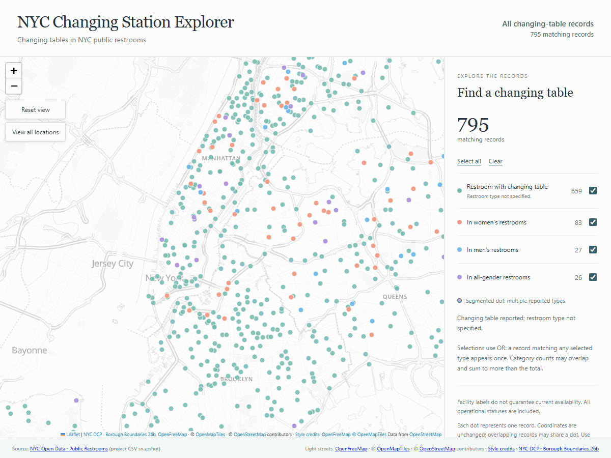
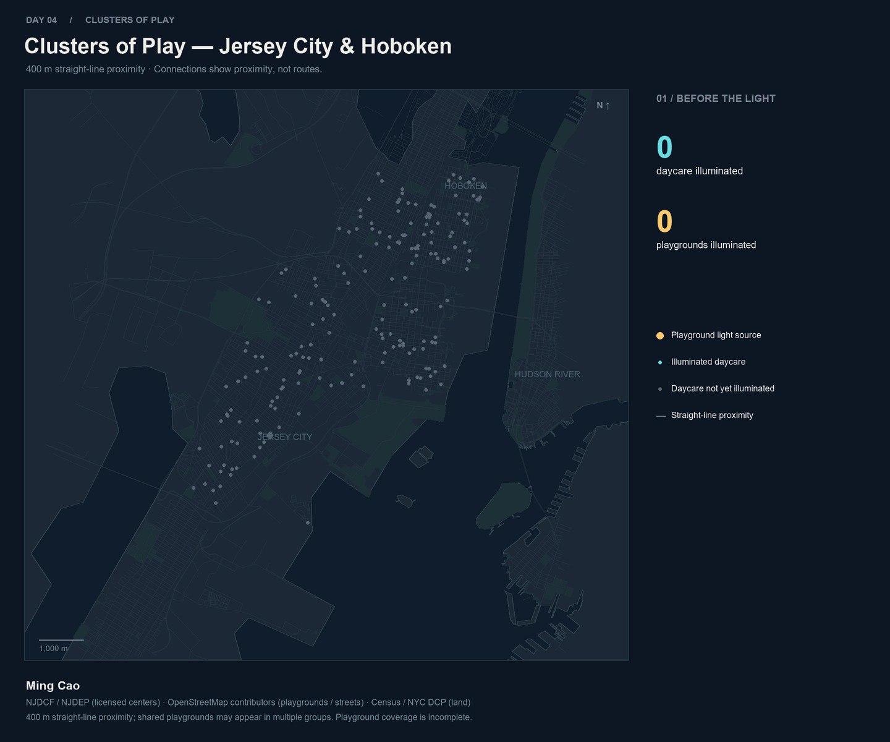
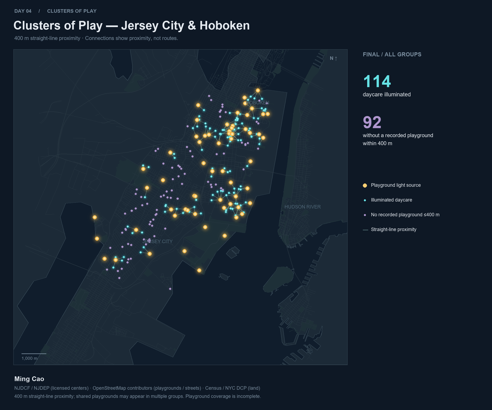
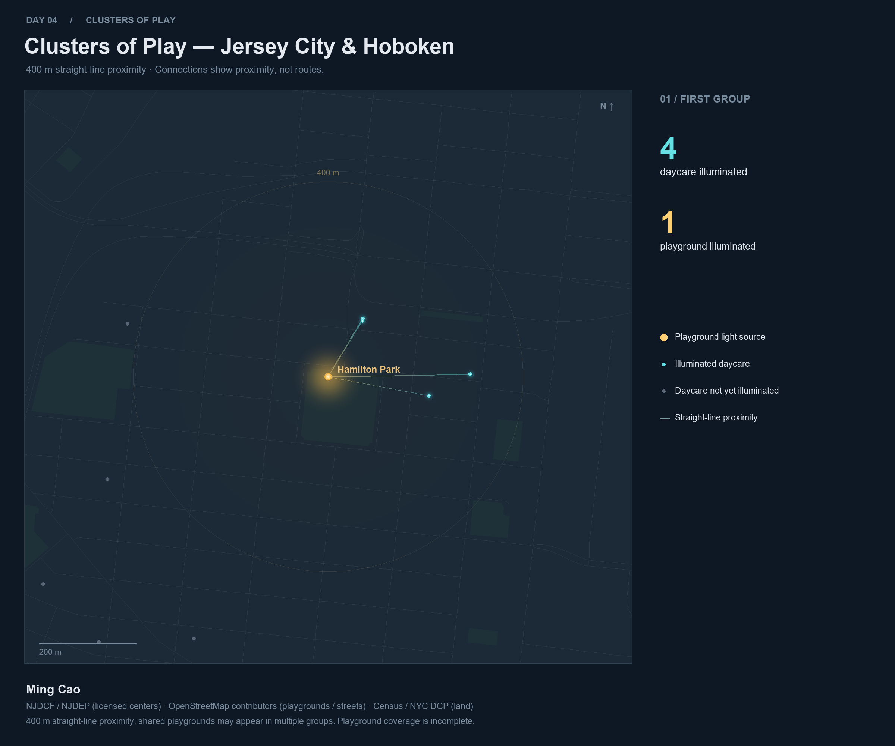
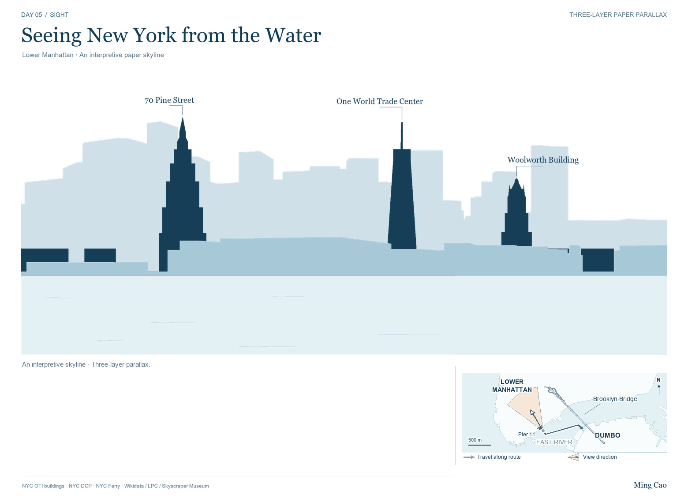
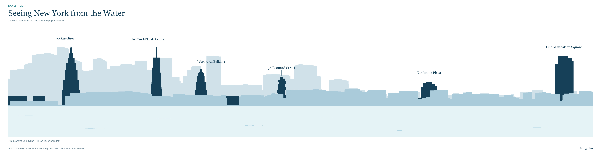

Day 01 · Points
NYC Changing Station Explorer
Explore reported changing tables in public restrooms across New York City's five boroughs.


A collection of maps and spatial explorations.
Day 01 · Points
Explore reported changing tables in public restrooms across New York City's five boroughs.

Day 02 · Lines
Explore recorded waterfront paths, surfaces and walking permissions in Jersey City and Brooklyn.

Day 03 · Polygons
Recorded activity spaces and paths in three Jersey City parks, shown at individual panel scales.

Day 04 · My Data
Playgrounds and licensed childcare centers in Jersey City and Hoboken, linked by straight-line proximity.



Day 05 · Sight
A layered illustration of Lower Manhattan, with an animated handscroll and its complete static panorama.


Day 06 · Vintage
Modern shoreline outlines overlay a historical New York Harbor chart cataloged as possibly dating to 1844.

Day 08 · Utopia
An imagined everyday neighborhood around Rittenhouse Square, where babies and caregivers set an unhurried pace.

Day 09 · Urban-Rural
Twenty Taiwanese surnames form a schematic landscape, with population-scaled glyphs and generalized ocean depth bands.